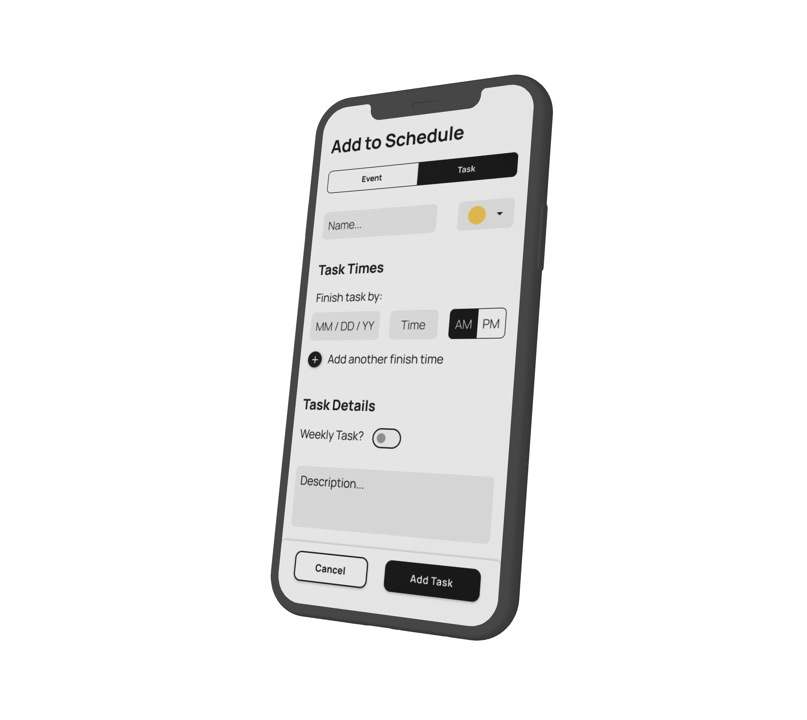
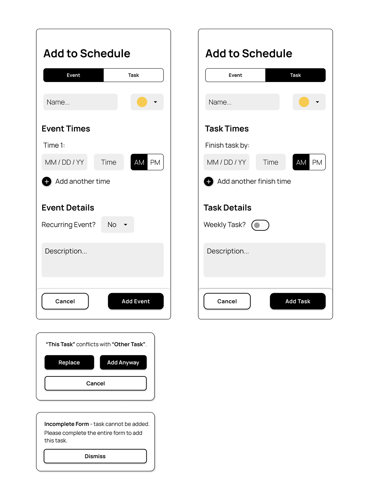

Designing a Scheduling App for New College Students
An introductory UX design class challenged teams of students to create an app or service that eases a person's transition from high school to college. There was no prescribed app type, so user research was a key part of the process.
Goal: Help new students adjust to living on a college campus.
Project Type:
Class, Group (3)
Role:
Researcher, Designer
Duration:
~ 6 hours
Formative Research
We decided to create a survey to reach as many people as possible. It was distributed via social media groups that are primarily used by RIT students, thus ensuring that we would reach our desired population.
Survey Details
14 Questions
5 Categories
demographics, social life, academics, responsibilities, & general difficulties
50 Responses
Every person in the group came up with questions and we reviewed all of them together. I specifically came up with questions in the social life, academics, and responsibilities categories.
Data Summary
78%
struggled with workload, scheduling, and responsibility
90%
failed to eat 3 meals a day
Just 12%
struggled with “difficult content”
Key Takeaway: keeping track of classes, assignments, meetings, and responsibilities was the biggest struggle for new college students.
User Profiles
We created 4 user profiles based on our survey data. They gave us direction and served as a base for personas later on. A user profile that I proposed is shown below:
Dissatisfied Freshman
Behaviors
- Unmotivated to complete their work
- Spends most of their day alone
- Lots of time spent stressed about changing to a new major
Goals
- Get through the semester while in a major they don't like
- Find friends with common interests
- Transition to a new major
Frustrations
- Doesn't like any of the work they have to do for class
- Feels that they don't have time to make friends
- Feels that campus resources for mental health and academic planning are rarely available
Proposed Solution
We decided to prototype a scheduling app to help new students keep track of their busy lives. To help identify key features of the app 4 personas were created (I made 2). We divided the features between ourselves and I took on designing the following features:
- Entering a Consistent/Permanent Schedule
- Adding Events and Tasks to the Schedule
Formative Designs
I began with pencil and paper sketches before moving to mid-fidelity digital mockups.
Entering a Consistent/Permanent Schedule
Key Sketches:
Allow users to sync their schedule with MyCourses (RIT's course management platform) to automatically add classes. This reduces user effort and cognitive load.
Always show the user's current schedule. This allows them to see it instead of forcing them to remember it.
Provide prompts for important events.
Indicate how far along the user is in the process. This prevents users from perceiving a long onboarding process and helps stop user attrition.
Mid-Fidelity Mockup

Adding Events and Tasks to the Schedule
Key Sketches:
Clear distinction between events and assignments.

Allow multiple dates for an event.
Provide the option for recurring events and assignments. This reduces user effort in the long run.
Mid-Fidelity Mockup:

Assessing the Mockups
After creating our mockups, we performed a heuristic evaluation and determined changes that should be made for the final app. The main heuristic my screens violated was:
Help Users Recognize, Diagnose, and Recover from Errors
Issues:
- users could add an event/assignment without filling in the necessary information
- there was no way to prevent users from creating conflicting events
Potential Solutions:
- give a prompt if information is missing
- indicate which fields are required
- notify users of conflicting events and allow them to “cancel”, “replace the event”, or “add anyway”
Final Product
The assignment instructions indicated that only 2 - 3 features should be implemented in the final prototype. After discussion, we decided to implement: adding events/assignments (my feature), viewing the schedule, and finding local events (classmate's features). Therefore, I only made high-fidelity screens for adding events/assignments, not for creating a consistent schedule.
Evaluating the Prototype
We evaluated the prototype by conducting usability studies. Due to time constraints, only 4 studies were conducted (I conducted 2).
Usability Study Details
Task 1: Create a new task called “Final Research Paper” due on 05/03/25 at 11:59pm
Task 2: Find and add the “CAD Commencement” event to the schedule
Metrics Collected:
- # of misclicks
- Task completion time
- Screen they spent the most time on
- Satisfaction (1 - 5)
Insights from Usability Study
A. Allow users to search for events on the “Add Event” screen
B. Add a section label here, similar to the “Event Times” and “Event Details” labels below
C. Provide permanent labels for these input fields. Do not rely on “hint text” to convey what should be put in a field.
Reflection
Our prototype provided a good solution for helping students adjust to college life. However, many potential users said that it failed to offer anything that existing apps (i.e. Google Calendar) didn't already have.
Overall, this project really helped me develop my UX research skills in both formative and evaluative contexts.
Key Takeaway: It's important to keep a product focused on its true value. Avoid diluting it with features already implemented in other products.